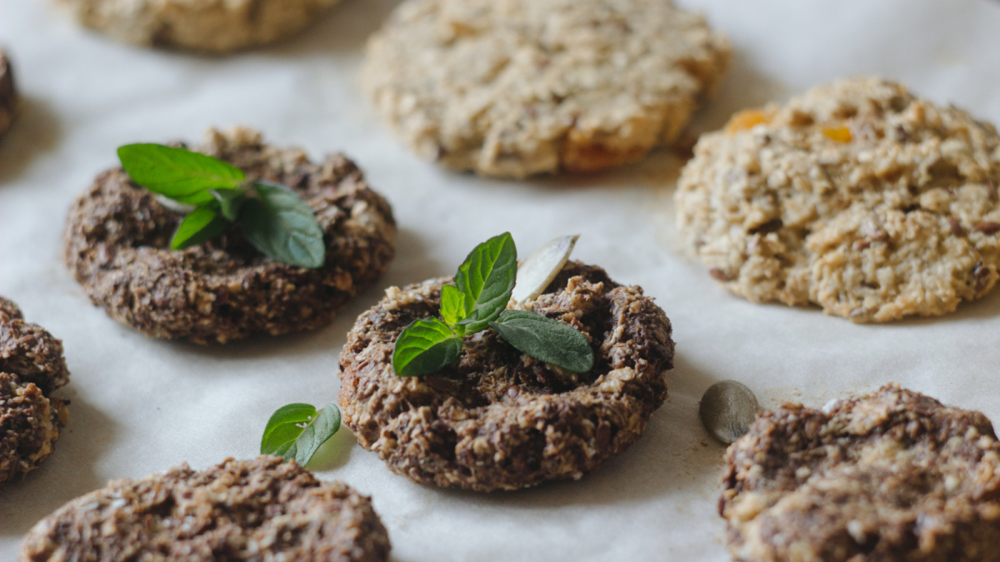
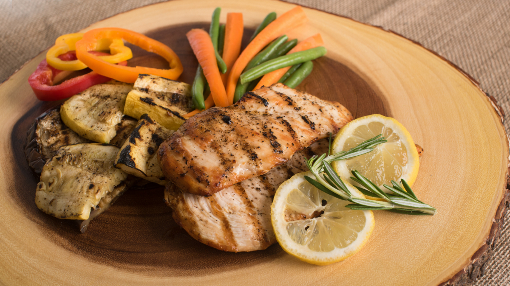
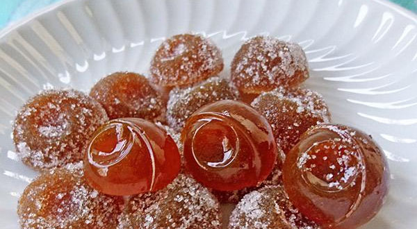
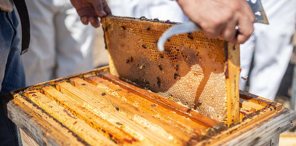
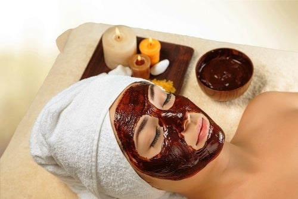

Blog

Ago 20, 2019 | Receta |
Galletas de avena y miel
Para preparar unas deliciosas galletas de avena y miel necesitaremos los siguientes ingredientes y seguir estos pasos.
Leer más

Ago 20, 2019 | Receta |
Pollo asado con miel y limón
Con esta receta podrás dar fácilmente un giro dulce al clásico pollo asado.
Leer más

Jun 28, 2019 | Receta |
Caramelos de miel
Con esta receta de caramelos de miel y limón caseros puedes preparar tus propios caramelos balsámicos de forma sencilla y rápida, mucho más naturales que los que encuentras en el mercado.
Leer más

Ago 25, 2019 | Información |
¿Cómo se hace la miel?
proceso de elaboración de la miel hasta que llega al envase etiquetado
Leer más
May 07, 2019 | Información |
Propiedades de la Miel
La miel presenta muchísimas propiedades terapéuticas, y por ello resulta un auténtico remedio natural, capaz de combatir diversas afecciones. Algunas de sus propiedades son:
Leer más

Feb 09, 2019 | Receta | 4
Loción limpiadora
Además de exfoliar y eliminar impurezas, puede ser de gran ayuda para limpiar el rostro.
Leer más